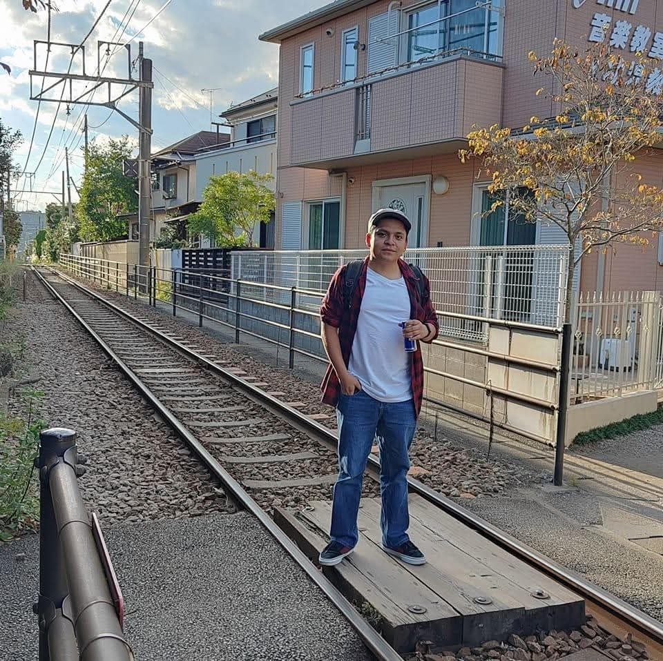

Technical Leadership
Lead AI and perception teams end to end — architecture, numerical acceptance criteria, benchmarks and production deployment.

PhD candidate in Artificial Intelligence and Technical Lead working across computer vision, edge ML, LLMs and knowledge graphs — author of 12+ international publications and focused on turning research into production systems.
“Technology gains meaning when grounded in human needs.”
AI researcher and engineer with computer vision at the core, extending into edge ML, LLMs, RAG and knowledge graphs — combining scientific rigor with technical leadership and deployment from embedded devices to GPU servers.
Lead AI and perception teams end to end — architecture, numerical acceptance criteria, benchmarks and production deployment.
PhD research in video anomaly detection and anomalous human-action recognition for public safety.
Model optimization and quantization (ONNX, INT8, SmoothQuant), reproducible benchmarks and deployment from NPUs and SoCs to H100-class servers.
Ontology-driven knowledge graphs, Graph RAG and LLM agents with guardrails and LLM-as-judge evaluation, plus vision–audio multimodal inference.
Applied AI systems built to protect people and solve real problems.
Peer-reviewed work in Computer Vision, anomaly detection and intelligent systems.
Tools and models I use across research, engineering and deployment.